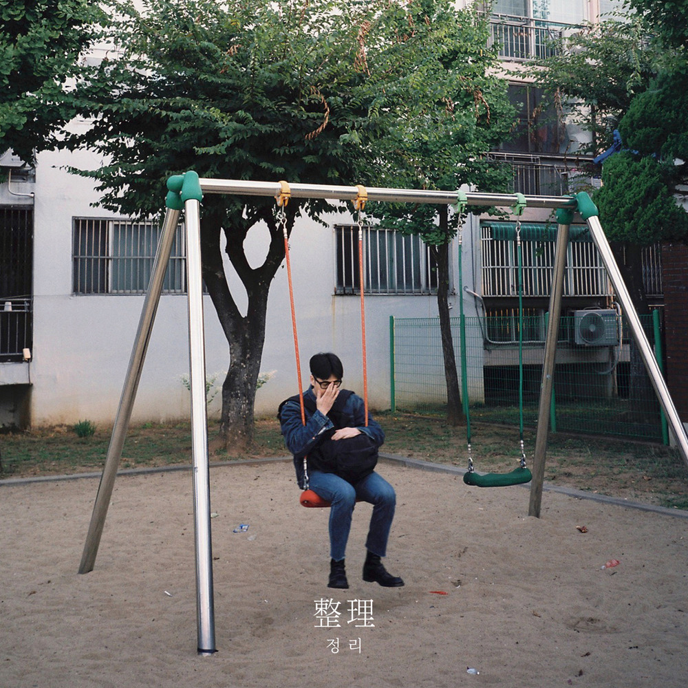
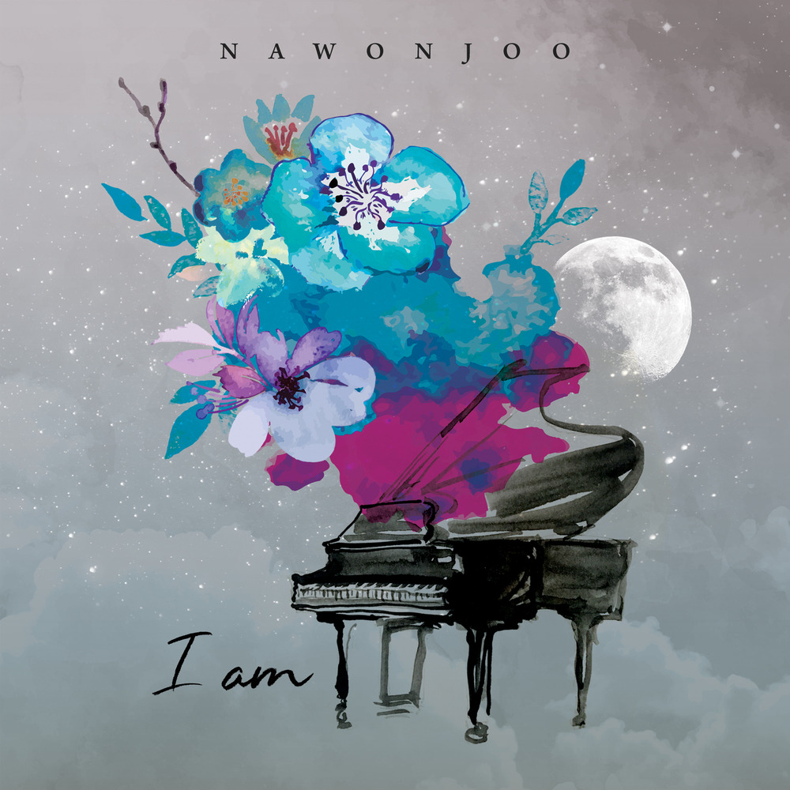

안녕하세요 라보엠입니다.
가수 정준일이 리메이크한 "나의 고백"은 원곡의 감성을 새롭게 해석하여 많은 이들의 마음을 울린 명곡입니다. 이 곡은 정준일의 첫 리메이크 앨범 "정리(整理)"에 수록되어 2018년 11월 1일에 발매되었습니다.

나원주 - 나의 고백(1997) 원곡의 역사와 의미
"나의 고백"은 원래 나원주가 1997년에 발표한 곡으로, 당시 많은 사랑을 받았습니다. 이 노래는 사랑하는 사람을 향한 애틋한 그리움과 헌신적인 사랑을 표현한 감성적인 발라드입니다.

나의 고백 노래 가사
하루 해가 저물어
어둠이 다가오면
지나치는 모습 속에
너를 찾아 헤맸지
어느새 내 얼굴에
소리 없이 내리는
이 빗물은 너를 향한
나의 눈물이겠지
우리의 사랑 우리의 만남
내 맘 깊이 간직하고 있어
이제 다시는 볼 수 없지만
너의 미소 내게 남아있네
오랜 시간이 흘러 지나서
나의 사랑을 잊어도
영원한 나의 사랑은
내 맘 깊은 곳에 남았어
이제 너를 기다릴 뿐이야
우리의 사랑 우리의 만남
내 맘 깊이 간직하고 있어
이제 다시는 볼 수 없지만
너의 미소 내게 남아있네
오랜 시간이 흘러 지나서
나의 사랑을 잊어도
영원한 나의 사랑은
내 맘 깊은 곳에 남았어
이제 너를 기다릴 뿐이야
원곡의 가사는 다음과 같이 시작됩니다:
"하루 해가 저물어 어둠이 다가오면
지나치는 모습 속에 너를 찾아 헤맸지
어느새 내 얼굴에 소리 없이 내리는
이 빗물은 너를 향한 나의 눈물이겠지"
이 노래는 사랑하는 사람을 잃은 후의 아픔과 그리움, 그리고 영원한 사랑의 약속을 담고 있습니다.
정준일의 리메이크 버전
정준일은 자신만의 독특한 음색과 감성으로 나의 고백을 새롭게 해석했습니다. 그의 버전은 원곡의 정서를 유지하면서도 현대적인 감성을 더해 많은 팬들들의 공감을 얻었습니다.
특히 이 곡의 피아노 연주자이자 편곡에 참여한 송영주는 정준일의 음악 작업에 중요한 역할을 했습니다. 정준일은 인터뷰에서 송영주의 연주에 대해 다음과 같이 언급했습니다. "피아노를 맡은 송영주 씨에게 솔로를 부탁했더니 엄청난 연주를 해주셔서 버리면 안 되겠다 싶었다. 이처럼 좋은 연주자가 보여주는 에너지는 내가 미처 가늠할 수가 없다."
송영주의 피아노 연주는 "나의 고백" 리메이크 버전에 깊이와 풍성함을 더해, 곡의 전반적인 품질을 한 단계 끌어올리는 데 중요한 역할을 했으며, 그녀와의 협업은 정준일의 앨범 전반적인 음악적 품질을 높이는 데 기여했습니다. 송영주와 같은 뛰어난 연주자들과의 협업은 정준일에게 음악적 성장의 기회가 되었습니다. 그는 이를 통해 많은 돈을 들여 음악을 배우고 온 것 같은 느낌을 받았다고 표현했습니다.
정준일의 나의 고백은 5분 38초의 러닝타임을 가진 곡으로, 그의 섬세한 보컬 표현이 돋보입니다. 그의 목소리는 노래의 감정선을 따라 부드럽게 흐르며, 때로는 강렬하게 터져 나와 청취자의 마음을 울립니다.
앨범 "정리(整理)"의 의미
나의 고백이 수록된 앨범 정리(整理)는 정준일이 평소 즐겨 들었던 곡들을 자신만의 색깔로 재해석한 작품입니다. 이 앨범에는 "나의 고백" 외에도 "아니야", "사랑에 빠졌네", "서울하늘" 등 총 8곡의 리메이크 트랙이 수록되어 있습니다.
정준일은 이 앨범을 통해 약 20여 년의 세월을 넘나들며 실력파 뮤지션들의 숨은 명곡들을 재조명했습니다. 그의 독특한 음색과 감성적인 해석은 각 곡에 새로운 생명을 불어넣었습니다.
리메이크 앨범은 단순히 옛 노래를 다시 부르는 것이 아닙니다. 정준일의 "나의 고백" 리메이크는 원곡의 정서를 존중하면서도 현대적인 감성을 더해 새로운 세대의 청취자들에게도 공감을 얻었습니다. 이러한 리메이크 작업은 좋은 노래의 생명력을 연장시키고, 새로운 세대에게 과거의 명곡을 소개하는 중요한 역할을 합니다. 또한 아티스트에게는 자신의 음악적 역량을 보여줄 수 있는 좋은 기회가 됩니다.
맺음말
정준일의 "나의 고백" 리메이크는 원곡의 아름다움을 재해석하여 많은 이들의 사랑을 받았습니다. 그의 섬세한 보컬과 감성적인 해석은 이 노래에 새로운 생명을 불어넣었고, 나원주를 좋아했던 사람들에게까지 깊은 감동을 선사했습니다. 음악은 시대를 초월하여 우리의 마음을 울립니다. 정준일의 "나의 고백" 리메이크는 과거의 명곡을 현재로 가져와 새로운 감동을 선사한 훌륭한 예시입니다. 앞으로도 이러한 의미 있는 리메이크 작업을 통해 좋은 음악이 계속해서 사랑받기를 기대해 봅니다.